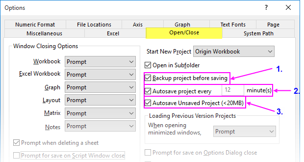

Origin-Projektdatei öffnen, schließen und durch Backup sichern
OPJ-Open-Close-Backup
Projektdatei öffnen
- Wählen Sie im Origin-Menü Datei: Öffnen. Stellen Sie sicher, dass für den Dateityp die Option Origin-Dateien (*.opju, *.opj, .og?, *.ot?) gewählt ist. Wählen Sie die Projektdatei und klicken Sie auf Öffnen. Dies schließt alles im aktuellen Arbeitsbereich, und die ausgewählte .OPJ-Datei wird geladen. Wenn Änderungen an dem aktuellen Projekt nicht gespeichert wurden, wird Origin Sie auffordern, Ihre Arbeit zu speichern.
- Wählen Sie im Menü Datei: Anhängen. Sie können mehrere Projektdateien auswählen. Die ausgewählten Projektdateien werden zum aktuellen Arbeitsbereich hinzugefügt. Sie werden gefragt, ob Sie sie (a) als Unterordner in den aktuellen Ordner des Projekt Explorers oder (b) direkt in den aktuellen Ordner einfügen möchten. Hinweis: Jeder Unterfenstername innerhalb eines Projekts muss eindeutig sein. Deshalb kann es passieren, dass Unterfenster in angehängten OPJs durch Nummerierung umbenannt werden.
- Ziehen Sie eine Projektdatei per Drag&Drop aus dem Windows Explorer in den Origin-Arbeitsbereich. Wenn der Arbeitsbereich standardmäßig der Arbeitsbereich Untitled ist, ist dies das Äquivalent zu Datei: Öffnen. Wenn eine benannte Projektdatei im aktuellen Arbeitsbereich geöffnet ist, wird die per Maus gezogene Projektdatei an den existierenden Arbeitsbereich angehängt und Sie werden aufgefordert, (a) einen neuen Ordner zu erstellen oder (b) sie zum aktuellen Ordner hinzuzufügen.
- Durch einen Doppelklick auf eine Projektdatei im Windows Explorer wird eine neue Instanz von Origin mit der geladenen Projektdatei gestartet.
Um eine Projektdatei zu speichern:
- Wählen Sie Datei: Projekt speichern oder klicken Sie auf Projekt speichern
 auf der Symbolleiste Standard. Dies speichert alles im aktuellen Origin-Arbeitsbereich unter dem Dateinamen, der in der Titelleiste des Origin-Arbeitsbereich gezeigt wird. Hinweis: Der Ordner des Projekt Explorers, der beim Speichern der OPJ-Datei aktiv ist, ist der Ordner, der beim erneuten Öffnen der OPJ-Datei geöffnet wird.
auf der Symbolleiste Standard. Dies speichert alles im aktuellen Origin-Arbeitsbereich unter dem Dateinamen, der in der Titelleiste des Origin-Arbeitsbereich gezeigt wird. Hinweis: Der Ordner des Projekt Explorers, der beim Speichern der OPJ-Datei aktiv ist, ist der Ordner, der beim erneuten Öffnen der OPJ-Datei geöffnet wird.
- Wählen Sie Datei: Projekt speichern unter... und legen Sie einen Pfad, einen Dateinamen und unter Dateityp *opju oder fest.
- Klicken Sie mit der rechten Maustaste auf einen Ordner oder einen Unterordner im Projekt Explorer, um nur diesen Ordner und seine Unterordner in einer separaten Projektdatei zu speichern.
 |
Sie können Origin konfigurieren, um eine benutzerdefinierte Projektdatei beim Start zu öffnen. Wählen Sie Einstellungen: Optionen, klicken Sie auf die Registerkarte Öffnen/Schließen und setzen Sie Neues Projekt öffnen auf Origin.opj. Klicken Sie bei der Befehlsaufforderung auf "Ja". Speichern Sie dann Ihr benutzerdefiniertes Projekt im Hauptordner Ihres Anwenderdateiordners und verwenden Sie dafür den Namen Origin.opj. Jedes Mal, wenn Sie Origin ausführen, wird Ihr benutzerdefiniertes Projekt automatisch geladen.
|
|
Origin 2018 enthält neue Dateiformate für Projekte, Unterfensterdateien und Vorlagen. Wenn Sie eine Datei speichern, haben Sie die Option, eine Datei mit oder ohne ein am Dateityp angehängtes "u" zu speichern (*.opj oder *.opju).
- Wenn Sie beabsichtigen, die Datei nur in der neuesten Version von Origin zu verwenden, sollten Sie den neuen OPJU-Dateityp verwenden, da er einige Vorteile hinsichtlich der Performance zeigt.
- Wenn Sie das Projekt mit Kollegen teilen möchten, die ältere Versionen von Origin verwenden, sollten Sie das Projekt in dem älteren OPJ-Dateityp speichern.
- Wenn Sie möchten, dass Origin standardmäßig im älteren OPJ-Format (und/oder im Diagrammfensterformat OGG) speichert, öffnen Sie das Skriptfenster (Fenster: Skriptfenster) und ändern Sie den Wert der "@"-Systemvariable @OPJ.
|
|
Seit Origin 2023 können Projekte nicht mehr als *.opj gespeichert werden. Alte OPJ-Dateien können noch immer in Version 2023 geöffnet werden.
|
Was wird (nicht) mit der Origin-Projektdatei gespeichert?
| Gespeichert |
|
| NICHT gespeichert |
|
Aktuelles Projekt klonen
Wenn ein gespeichertes Projekt geöffnet und aktualisiert wurde, können Sie das Projekt "klonen" und die geklonte Projektdatei dann verwenden, um die zugehörigen Operationen mit anderen Daten oder den gleichen, aber zukünftig geänderten Daten zu wiederholen. Wir bezeichnen dieses geklonte Projekt als ein Analysevorlagenprojekt, das heißt, es kann als Arbeitsroutine eingesetzt werden genauso wie allgemeine Analysevorlagen.
- Wählen Sie Datei: Aktuelles Projekt klonen.
- Im Dialog Data Manipulation: clrAllData
-
werden der aktuelle Projektname und der vollständige Pfad gezeigt, falls das Projekt gespeichert wurde. Sie können wählen,
- Datenkonnektoren zu den Arbeitsblättern hinzuzufügen, die noch keine Konnektoren haben. Bitte beachten Sie, dass Datenkonnektoren hinzufügen nur verfügbar ist, wenn das aktuelle Projekt gespeichert wurde. Die Datenquelle des neu hinzugefügten Datenkonnektors ist die aktuelle Projektdatei, genauso wie Sie die Quelldaten durch Auswahl von Daten: Mit Datei verbinden: Origin-Datei importieren.
- Löschen Sie alle Daten oder nur die importierten Daten (einschließlich der Daten, die über das Menü Daten: Aus Datei importieren importiert wurden).
- Falls das aktuelle Projekt die Neuberechnung beinhaltet, können Sie wählen, die neu berechenbaren Spalten zu löschen oder die Neuberechnung auf Keine zu setzen.
Auf diese Weise wird ein Duplikat des vorhandenen Projekts mit dem Namen UNTITLED.opju erstellt und geöffnet, in dem alle Fenster und Operationen des ursprünglichen Projekts aufbewahrt werden. Gleichzeitig werden alle importierten Daten gelöscht, aber die Verbindung zwischen der Datenquelle und dem Zielarbeitsblatt bleibt erhalten. Sie können dann einfach die Datenquelle aktualisieren, und alle Arbeitsblätter und Diagramme werden automatisch mit aktualisiert.
Projektsicherung und -wiederherstellung
Origin hat drei unterschiedliche Funktionen zur Datenwiederherstellung, die über Einstellungen: Optionen aktiviert bzw. deaktiviert werden können:
-
- 
- Das Backup ist die älteste Origin-Wiederherstellungsfunktion und kann nützlich sein, wenn Sie eine Projektdatei haben, die sich nicht öffnen lässt. Diese Datei sollte den Projektinhalt zum Zeitpunkt der zuletzt erfolgreich gespeicherten Datei enthalten.
- Die automatische Speicherung ist nützlich zum Wiederherstellen nach Programmabstürzen und Stromausfällen. Die Datei wird automatisch zu einem vordefinierten Intervall gespeichert (Standard ist alle 12 Minuten).
- Ungespeichert ist nützlich zum Wiederherstellen von Daten, die Sie beim Schließen der Datei oder des Programm nicht gespeichert haben (sowohl Untitled und Dateien mit Namen).
Neue Projekte
Wenn Sie Origin starten, wird der Origin-Fenstertitel standardmäßig mit UNTITLED angezeigt, um darauf hinzuweisen, dass es sich um ein leeres neues Projekt handelt. Diese Datei behält den Namen UNTITLED, bis Sie im Menü Datei: Projekt speichern oder Datei: Projekt speichern unter wählen. In beiden Fällen öffnet sich beim Speichern von UNTITLED der Dialog Speichern unter, in dem Sie einen Pfad wählen können, einen Dateinamen und einen Dateityp.
Ungespeicherte Projekte automatisch speichern
Wenn Sie Änderungen an einem geöffneten Projekt vornehmen - egal, ob es ein Projekt mit Name oder UNTITLED ist -- wird ein Sternchen ("*") neben dem Dateinamen in der Titelleiste von Origin angezeigt.
-
Sobald eine Datei modifiziert wurde, veranlasst der Versuch, die Datei zu schließen oder Origin zu verlassen, bevor Sie Datei: Projekt speichern oder Datei: Projekt speichern unter gewählt haben, die Anzeige einer Befehlsaufforderung, die Änderungen am Projekt zu speichern.
Wenn Sie seit Origin 2018 NEIN sagen und (1) Ungespeicherte Projekte automatisch speichern aktiviert ist (Standard) und (2) die Projektdateigröße kleiner als der Wert der LabTalk-Systemvariablen @USM ist (Standard = 20 MB), dann wird die Projektdatei automatisch vor dem Schließen gespeichert (siehe Hinweise).
- Wenn das Projekt keinen Titel hatte - UNTITLED -, wird der Projektinhalt unter C:\UsersUser\Documents\OriginLab\Unsaved\UNTITLED.opj(u) gespeichert.
- Wenn das Projekt zuvor unter einem Projektnamen gespeichert wurde, wird der Projektinhalt unter C:\UsersUser\Documents\OriginLab\Unsaved\Projektname.opj(u) gespeichert.
Um ein ungespeichertes Projekt wiederherzustellen:
- Starten Sie Origin.
- Klicken Sie auf Hilfe: Ordner öffnen: Ungespeicherte Projekte.
- Durchsuchen Sie den Ordner nach Ihrer ungespeicherten Datei.
|
Die andere Möglichkeit, Ordner zu finden, die mit der Datenwiederherstellung verbunden sind, besteht darin, Einstellungen: Optionen zu wählen und auf die Registerkarte Systempfad zu klicken. Hier finden Sie die Pfade für automatisch gespeicherte, Backup- und ungespeicherte Dateien.
|
Hinweise zu ungespeicherten Projekten
- Die maximale Größe für ungespeicherte Dateien wird von der LabTalk-Systemvariable @USM gesteuert. Der Standardwert für @USM ist 20 MB. Ungespeicherte Dateien, die größer als der Schwellenwert von @USM sind, werden NICHT gespeichert, wenn Sie das Programm ohne Speichern verlassen.
- Es kann nur eine \Unsaved\UNTITLED-Datei geben. Falls Sie sich entscheiden, den Inhalt von UNTITLED wiederherzustellen, sollten Sie die Datei öffnen und sofort mit einem aussagekräftigen Namen speichern, da UNTITLED überschrieben wird, wenn Sie ein weiteres Projekt ohne Namen öffnen und beim Schließen oder Verlassen des Programms nicht speichern.
- Standardmäßig werden ungespeicherte Dateien 7 Tage lang aufbewahrt. Danach werden sie verworfen. Die "Aufbewahrungszeit" wird von der LabTalk-Systemvariable @USKT gesteuert.
Projekt automatisch alle xx Minute(n) speichern
Origin verfügt auch über eine Funktion Projekt alle xx Minuten automatisch speichern, die standardmäßig eingeschaltet ist. Wenn sie aktiviert ist, wird der Projektinhalt in benutzerdefinierten Intervallen in eine temporäre Datei im Anwenderordner \Documents\OriginLab\Autosave gespeichert. Während der Sitzung werden Dateien mit Namen im Ordner \Autosave mit projectFilenNme-xxxxxxxxx aufgelistet. UNTITLED-Projekte werden mit UNTITLED-xxxxxxxxx aufgeführt. Wenn Sie das Origin-Projekt speichern oder das Programm normal beenden, räumt Origin auf, indem es diese temporären Dateien löscht. Wenn ein benanntes und modifiziertes Projekt oder ein UNTITLED-Projekt ohne Speichern geschlossen wird, wird die zuletzt automatisch gespeicherte Datei als Autosave\Last-AutoSave.opj(u) gespeichert.
Im Fall eines Programmabsturzes sollten sowohl Dateien mit und ohne Namen in ihrem zuletzt automatisch gespeicherten Zustand aufbewahrt sein, als projectFilenNme-xxxxxxxxx bzw. UNTITLED-xxxxxxxxx. Standardmäßig werden diese Dateien nur 12 Stunden lang aufbewahrt. Daher ist es am besten zu versuchen, den Inhalt sofort wiederherzustellen (siehe Hinweise).
- Automatisches Speichern ist standardmäßig für UNTITLED-Projekte sowie für Projekte mit Namen eingeschaltet.
- Wenn Sie sich gegen das Speichern eines UNTITLED-Projekts entscheiden, wird der Projektinhalt in eine Daten mit dem Namen Last-AutoSave.opj(u) geschrieben. Wie bei \Backup\UNTITLED.OPJ(U) kann es nur eine Datei mit dem Namen Last-AutoSave.opj(u) geben.
- Um die automatische Speicherung von UNTITLED-Projekten zu deaktivieren, setzen Sie @DASU = 1.
- Navigieren Sie zum Ordner Autosave, indem Sie eine der folgenden Optionen wählen:
- Wählen Sie Hilfe: Ordner öffnen: Automatisch Speichern im Menü, um den Ordner zu öffnen.
- Öffnen Sie Einstellungen: Optionen. Die Registerkarte Systempfad führt alle Pfade auf, die von Origin erstellt wurden, einschließlich Autosave (Beachten Sie, dass Sie auf dieser Registerkarte den Speicherort Ihres Autosave-Ordners ändern können, indem Sie Autosave markieren und auf die Schaltfläche Ändern klicken).
- Öffnen Sie Last-AutoSave.opju/opj mit einem (a) Doppelklick auf das Projektsymbol im Windows-Dateiexplorer, durch (b) Verwenden von Origins Menü Datei: Öffnen oder durch (c) Drag&Drop der Datei in Ihren Origin-Arbeitsbereich.
Einstellungen der automatischen Speicherung festlegen
Um diese Funktion der regelmäßigen automatischen Speicherung zu aktivieren, deaktivieren oder die Zeitabstände zwischen den automatischen Speicherungen anzupassen:
- Wählen Sie im Menü Einstellungen: Optionen, um den Dialog Optionen zu öffnen.
- Gehen Sie zur Registerkarte Öffnen/Schließen und aktivieren bzw. deaktivieren Sie das Kontrollkästchen Automatisches Speichern des Projekts alle x Minute(n). Passen Sie die Speicherzeitabstände nach Bedarf an.
Hinweise zu automatisch gespeicherten Projekten
- Wenn die aktuelle Projektgröße 20 MB überschreitet (Standardwert, der von der "@"-Systemvariablen @ASC gesteuert wird), hat das automatische Speichern den folgenden Warndialog zur Folge:
- Da das automatische Speichern von Dateien Ihre Arbeit verlangsamen kann, können Sie über diesen Dialog die automatische Speicherung für das aktuelle Projekt oder für jedes Projekt, das den Schwellenwert überschreitet, ausschalten. Tun Sie nur nach sorgfältiger Überlegung.
- Die Zeitdauer, die ein automatisch gespeichertes (abgestürztes) Projekt aufbewahrt wird, wird von der "@"-Systemvariable @ASKH gesteuert. Der Standard ist "Aufbewahrungsstunden" = 12, aber Sie können diesen Wert im Skriptfenster (Fenster: Skriptfenster) ändern. Wenn Sie Dateien nicht automatisch aus dem Ordner Autosave entfernen möchten, setzen Sie @ASKH = -1.
Vor dem Speichern Sicherungskopie erstellen
Wenn Sie manuell eine Origin-Projektdatei mit Namen speichern möchten, wird eine Kopie der Datei, wie sie zum Zeitpunkt der letzten Speicherung bestand, im Ordner Projektsicherungsordner als Projektname.opj(u) gespeichert. Sollten Sie aus irgendeinem Grund ein gespeichertes Projekt nicht öffnen können (oder es wird geöffnet, ist aber beschädigt), sollte es möglich sein, zu der zuvor gespeicherten Version der Datei zurückzukehren, indem die Datei unter \Backup geöffnet wird. Diese Funktion ist standardmäßig aktiviert und unabhängig von den Funktionen "Automatische Speicherung" und "Ungespeichert".
Backup-Projekte öffnen
- Starten Sie Origin.
- Wählen Sie Hilfe: Ordner öffnen: Projekt-Backup.
Oder:
Öffnen Sie den Dialog Einstellungen: Optionen, um den \Backup-Pfad auf der Registerkarte Systempfad zu kopieren und ihn in der Adressleiste des Windows-Dateiexplorers einzufügen.
- Suchen Sie die Projektdatei und öffnen Sie sie.
| Hinweis: Der Sicherungsordner ist in Origin 2018b eingeführt. Bei älteren Versionen sichert Origin die vorherige Version der aktuellen Projektdatei durch Speichern einer BACKUP.OPJ(U)-Datei im Anwenderdateiordner (UFF). Es kann nur eine BACKUP-Datei geben. Wenn Sie also ein anderes Projekt zu einem späteren Zeitpunkt erneut öffnen und diese Datei dann speichern, wäre das BACKUP das der zuletzt gespeicherten Datei. Origin 2018b und höher haben diese Beschränkung nicht, da jedes Backup mit dem gegebenen Dateinamen gespeichert wird. |
Um Backups zu deaktivieren:
- Wählen Sie im Menü Einstellungen: Optionen, um den Dialog Optionen zu öffnen.
- Gehen Sie zur Registerkarte Öffnen/Schließen und deaktivieren Sie das Kontrollkästchen Backup vor dem Speichern.
Hinweise zu Backup-Projekten
- Seit Origin 2018b lässt Origin das Speichern von mehreren Sicherungsdateien zu, eine für jedes Projekt mit einem Namen. Da diese Dateien nicht automatisch bereinigt werden, sammeln sie sich mit der Zeit an und verbrauchen irgendwann viel Festplattenspeicher. Standardmäßig zeigt Origin eine regelmäßige Erinnerungsmeldung zu den anwachsenden Sicherungsdateien an. Diese Meldung wird über die "@"-Systemvariable @BFS gesteuert.
-
Zuletzt verwendete Projekte prüfen
- Wählen Sie Datei: Zuletzt verwendete Projekte, um das Projekt zu prüfen, das zuletzt geöffnet wurde.
oder
- Wählen Sie Hilfe: Ordner öffnen: Anwenderdateiordner. Öffnen Sie dann OriginProjHistory.txt, um den vollständigen Pfad der zuletzt geöffneten Projekte zu prüfen.
Hinweis: Die Systemvariable @MHF steuert die max. Anzahl der Dateieinträge, die in der Datei OriginProjHistory.txt im Anwenderdateiordner aufbewahrt werden. Sie können dies ausschalten, indem Sie diesen Wert (keine Registry) auf 8 oder weniger festlegen.